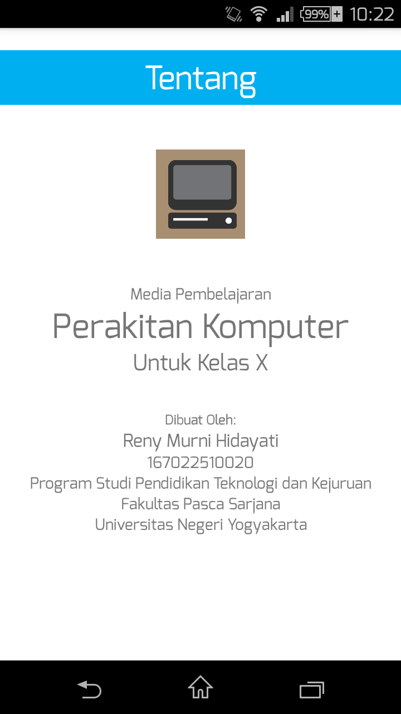

Fitur Tentang berfungsi untuk menampilkan informasi pengembang aplikasi. Untuk menggunakan fitur ini, sentuh pada menu Tentang dan aplikassi akan membawa Anda menuju fitur Tentang.
Pada fitur ini, ditampilkan berbagai macam informasi yang berkaitan dengan pengembangan aplikasi ini.

Untuk kembali, tekan tombol Back Button.